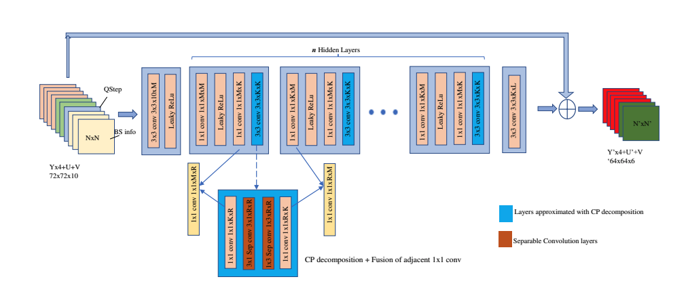

{{ page.title }}
Aaltodoc
Zhijie He
Aalto University, Espoo, Finland

|
Abstract
The most recent video coding standard VVC contains five in-loop filters to reduce
compression artifacts that come from the common drawbacks of block-based hybrid
compression framework. However, those traditional in-loop filters are insufficient to
deal with the complicated compression artifacts. The emergence of Neural Networks
(NNs) has brought significant advancements in the realm of image and video processing,
offering a promising avenue for improving video compression. Many prior studies in
this domain have focused on training models on large datasets to achieve generalization,
rather than catering to specific content characteristics. In this work, we introduced a
content-adaptive in-loop filter for Versatile Video Coding (VVC) working with other
in-loop filters. The content adaptation is achieved by over-fitting a pre-trained model at
the encoder side on the test data. To reduce the bitrate overhead, the Neural Network
Compression and Representation (NNR) standard has been introduced which focuses
on compressing NNs efficiently. Furthermore, rather than over-fitting all parameters
within the NN model, we introduce a set of learnable parameters known as multipliers,
which serve to further reduce the bitrate overhead. The proposed model takes auxiliary
information including Boundary Strength (BS) and Quantization parameter (QP) as
input. Additionally, we have conducted a comprehensive series of experiments to
identify the optimal combination of hyperparameters for this approach. The results
indicate coding gains of -2.07% (Y), -5.54% (Cb), -1.95% (Cr) Bjøntegaard Delta rate
(BD-rate) for Class B and -1.34% (Y), -1.88% (Cb), -0.52% (Cr) Bjøntegaard Delta
rate (BD-rate) for Class D with respect to the Peak Signal-to-Noise Ration (PSNR)
on top of the Versatile Video Coding (VVC) Test Model (VVC) 12.0 with NN-based
Video Coding (NNVC) 5.0, in Random Access (RA) configuration.
|
Paper: [PDF]
|
Bibtex
@mastersthesis{he2023content,
title={Content Adaptive NN-Based In-Loop Filter for VVC},
author={He, Zhijie and others},
year={2023}
}11